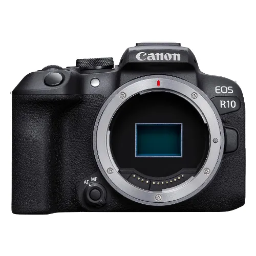
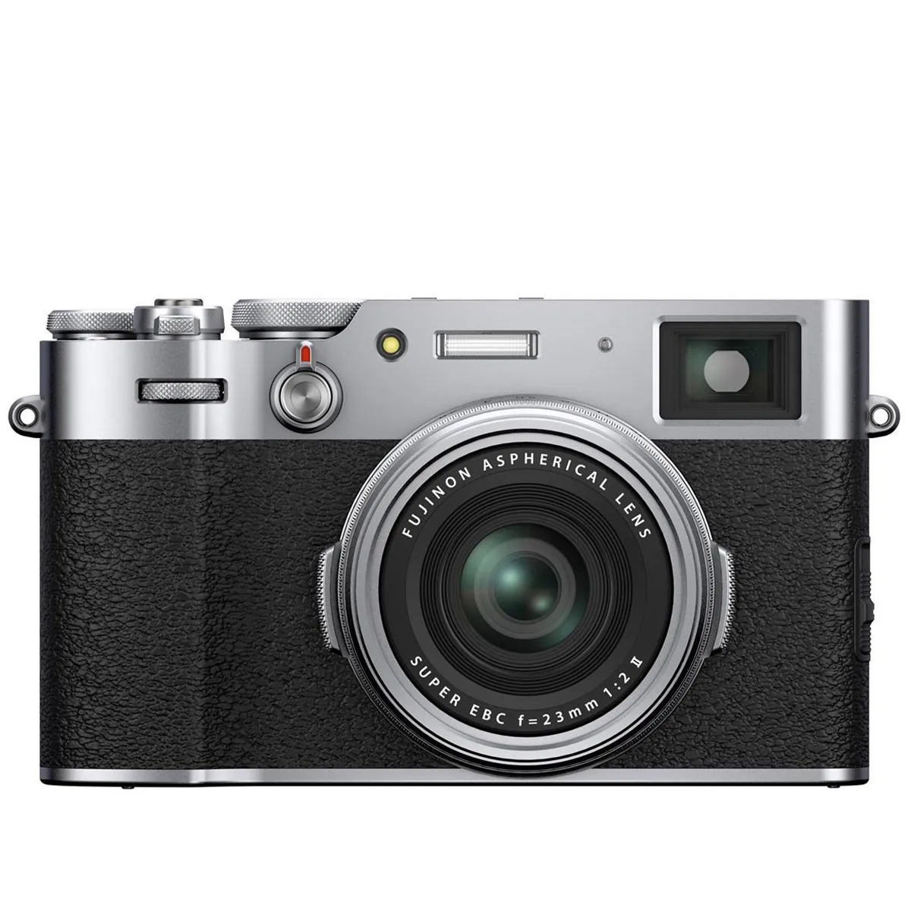
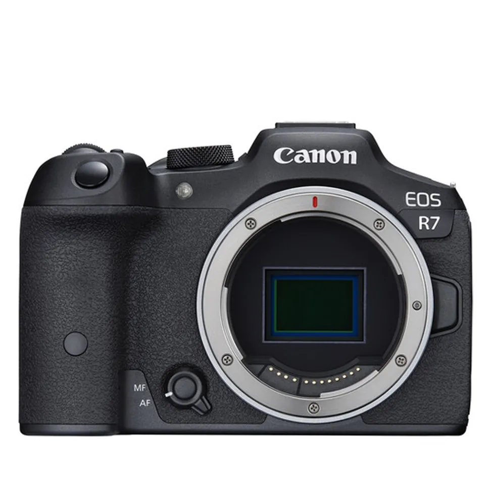
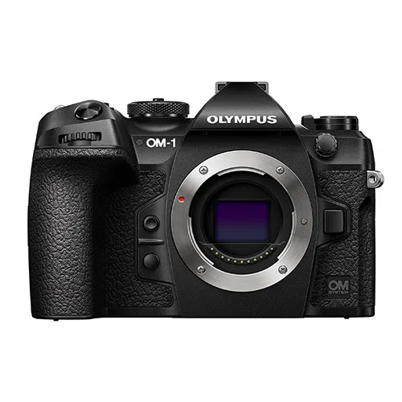

Reccomendations for cameras to buy
Sony A7 IV

Best overall camera
With excellent autofocus, image quality and video features, the Sony A7 IV is every bit the modern mirrorless hybrid.
Canon EOS R10
Best for beginners
With a compact build, good handling and modern autofocus, the Canon EOS R10 represents excellent value for beginners.
Fujifilm X100V
Best premium compact
With a fixed focal length that's perfect for street photography, the Fujifilm X100V is a premium compact with plenty of retro style.
Sony A7R V
Best for professionals
With a huge pixel count and superb autofocus, the flagship Sony A7R V delivers outstanding stills when paired with a top-tier lens.
Canon EOS R7
Best for enthusiasts
If you can look past its limited range of native lenses, the EOS R7 is a fast, powerful camera that handles well and shoots excellent stills.
OM System OM-1
Best Micro Four Thirds camera
Lovely in the hand and versatile to shoot with, the OM System OM-1 delivers solid performance with its 20MP stacked sensor.